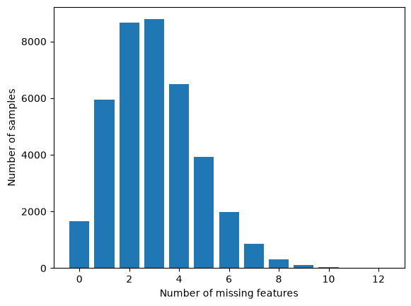
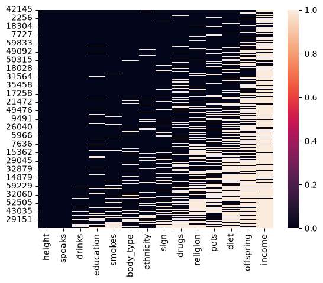
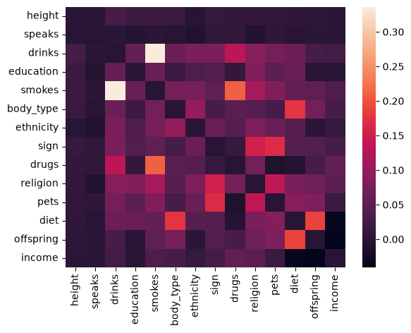
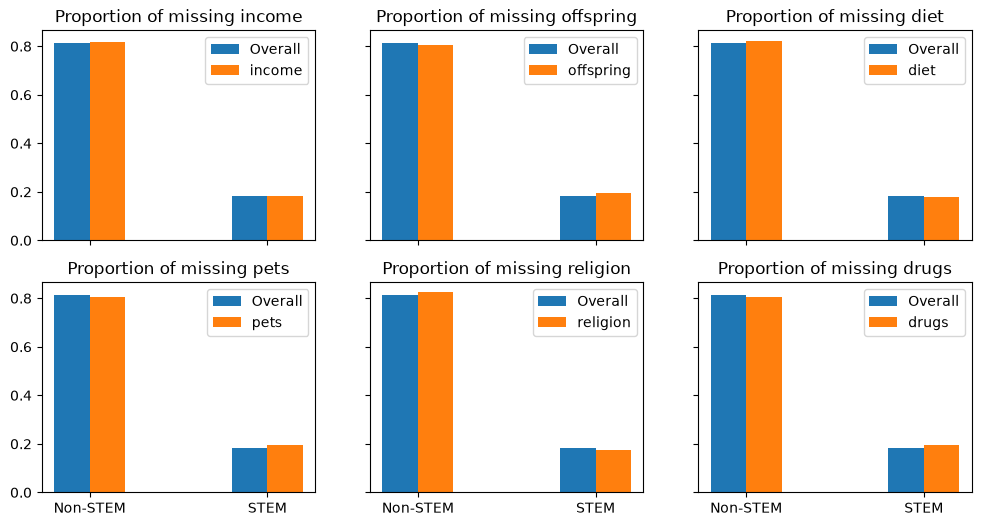
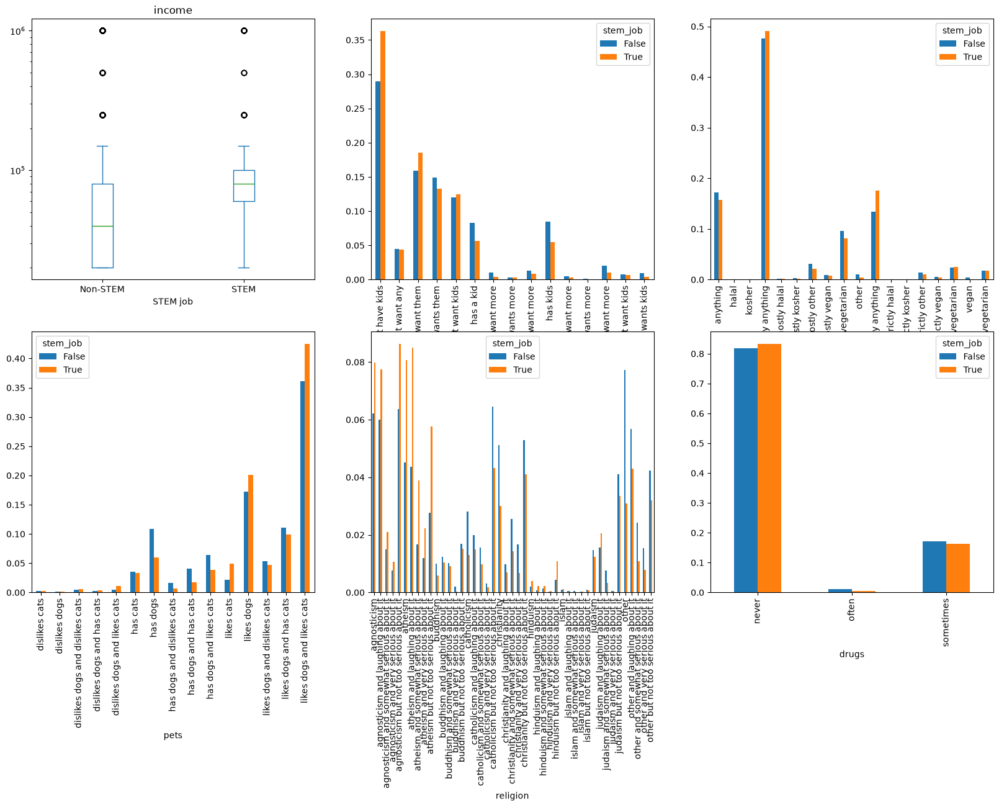
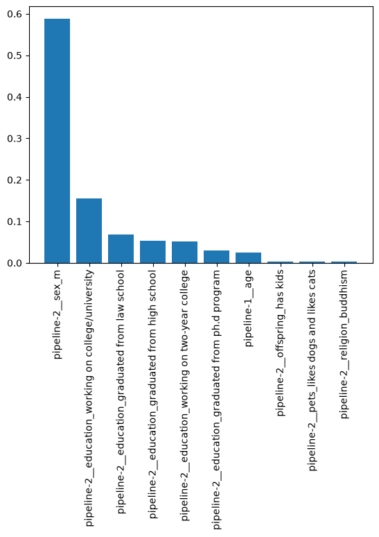

import matplotlib.pyplot as plt
import numpy as np
import pandas as pd
import seaborn as sns
from sklearn.pipeline import make_pipeline
from sklearn.preprocessing import (
StandardScaler,
Normalizer,
FunctionTransformer,
OneHotEncoder,
OrdinalEncoder,
PowerTransformer,
)
from sklearn.decomposition import PCA
from sklearn.impute import SimpleImputer, KNNImputer
from sklearn.compose import make_column_transformer
from sklearn.tree import DecisionTreeClassifier
from sklearn.model_selection import train_test_split, cross_val_score, cross_validateUnderstanding missing values
# Revisit the OKCupid data
df = pd.read_csv("../04_categorical/profiles_revised.csv")
df.info()<class 'pandas.DataFrame'>
RangeIndex: 59946 entries, 0 to 59945
Data columns (total 19 columns):
# Column Non-Null Count Dtype
--- ------ -------------- -----
0 age 59946 non-null int64
1 body_type 54650 non-null str
2 diet 35551 non-null str
3 drinks 56961 non-null str
4 drugs 45866 non-null str
5 education 53318 non-null str
6 ethnicity 54266 non-null str
7 height 59943 non-null float64
8 income 59946 non-null int64
9 job 51748 non-null str
10 offspring 24385 non-null str
11 orientation 59946 non-null str
12 pets 40025 non-null str
13 religion 39720 non-null str
14 sex 59946 non-null str
15 sign 48890 non-null str
16 smokes 54434 non-null str
17 speaks 59896 non-null str
18 status 59946 non-null str
dtypes: float64(1), int64(2), str(16)
memory usage: 8.7 MB# Target: predict if job is stem related
df = df.dropna(axis=0, subset="job") # dropping empty target, don't want to invent for training
df["stem_job"] = df["job"].str.contains("computer|science|engineer|math|tech", case=False)
df.drop(columns="job", inplace=True)
df["stem_job"].value_counts() / len(df)stem_job
False 0.815317
True 0.184683
Name: count, dtype: float64df.info()<class 'pandas.DataFrame'>
Index: 51748 entries, 0 to 59945
Data columns (total 19 columns):
# Column Non-Null Count Dtype
--- ------ -------------- -----
0 age 51748 non-null int64
1 body_type 47791 non-null str
2 diet 32056 non-null str
3 drinks 50168 non-null str
4 drugs 39989 non-null str
5 education 48175 non-null str
6 ethnicity 47686 non-null str
7 height 51747 non-null float64
8 income 51748 non-null int64
9 offspring 22387 non-null str
10 orientation 51748 non-null str
11 pets 36566 non-null str
12 religion 36414 non-null str
13 sex 51748 non-null str
14 sign 43929 non-null str
15 smokes 48128 non-null str
16 speaks 51714 non-null str
17 status 51748 non-null str
18 stem_job 51748 non-null bool
dtypes: bool(1), float64(1), int64(2), str(15)
memory usage: 7.6 MBtrain, test = train_test_split(df, test_size=0.25, random_state=322, stratify=df[["stem_job"]])In addition to looking at how many of which feature are missing, it’s useful to understand whether missing values tend to co-occur.
# set income < 0 to missing
train.loc[train["income"] < 0, "income"] = np.nan
train.head()| age | body_type | diet | drinks | drugs | education | ethnicity | height | income | offspring | orientation | pets | religion | sex | sign | smokes | speaks | status | stem_job | |
|---|---|---|---|---|---|---|---|---|---|---|---|---|---|---|---|---|---|---|---|
| 53633 | 51 | fit | mostly vegan | rarely | never | graduated from masters program | white | 70.0 | 80000.0 | has a kid | straight | likes dogs and has cats | other and very serious about it | f | virgo and it matters a lot | no | english (fluently) | single | False |
| 21354 | 47 | athletic | NaN | socially | never | graduated from college/university | black | 69.0 | NaN | NaN | straight | likes dogs and dislikes cats | catholicism but not too serious about it | m | libra but it doesn’t matter | no | english | single | False |
| 10785 | 54 | curvy | mostly anything | not at all | never | graduated from college/university | black | 62.0 | NaN | has a kid, but doesn’t want more | straight | has dogs and dislikes cats | christianity | f | aquarius and it’s fun to think about | no | english, english | single | False |
| 28139 | 24 | fit | mostly anything | socially | never | working on college/university | white | 73.0 | NaN | doesn’t have kids, but wants them | straight | likes dogs and likes cats | judaism but not too serious about it | m | sagittarius and it’s fun to think about | no | english (fluently), russian (fluently) | single | False |
| 40368 | 19 | average | anything | not at all | never | working on high school | asian, white, other | 66.0 | NaN | has a kid | bisexual | likes dogs and has cats | other and somewhat serious about it | f | taurus and it’s fun to think about | trying to quit | english (fluently), french (poorly) | single | False |
print("Missing values by percentage of dataset")
train.isna().sum().sort_values(ascending=False) / len(train) * 100Missing values by percentage of datasetincome 78.470021
offspring 56.674654
diet 38.172168
pets 29.440107
religion 29.411765
drugs 22.797660
sign 15.091082
ethnicity 7.848290
body_type 7.665353
smokes 6.951637
education 6.804772
drinks 2.981114
speaks 0.079874
height 0.002577
age 0.000000
orientation 0.000000
sex 0.000000
status 0.000000
stem_job 0.000000
dtype: float64# How many missing values per sample?
missing_per_sample = train.isna().sum(axis=1).value_counts()
plt.bar(missing_per_sample.index, missing_per_sample)
plt.xlabel("Number of missing features")
plt.ylabel("Number of samples")
# look at the top 5 missing
train.loc[train.isna().sum(axis=1).sort_values(ascending=False).index].head()| age | body_type | diet | drinks | drugs | education | ethnicity | height | income | offspring | orientation | pets | religion | sex | sign | smokes | speaks | status | stem_job | |
|---|---|---|---|---|---|---|---|---|---|---|---|---|---|---|---|---|---|---|---|
| 36428 | 31 | NaN | NaN | NaN | NaN | NaN | other | NaN | NaN | NaN | straight | NaN | NaN | f | NaN | NaN | english (fluently), german (fluently) | single | False |
| 34519 | 28 | NaN | strictly anything | NaN | NaN | NaN | NaN | 72.0 | NaN | NaN | straight | NaN | NaN | m | NaN | NaN | english | single | False |
| 44538 | 44 | NaN | NaN | NaN | NaN | NaN | NaN | 76.0 | NaN | NaN | bisexual | NaN | NaN | m | NaN | no | english | single | False |
| 15083 | 39 | NaN | NaN | NaN | NaN | NaN | white | 69.0 | NaN | NaN | straight | NaN | NaN | f | NaN | NaN | english | single | False |
| 7056 | 32 | NaN | NaN | NaN | never | NaN | NaN | 66.0 | NaN | NaN | straight | NaN | NaN | f | NaN | NaN | english | single | False |
# Maybe a heatmap can show trends?
# number of missing per sample
missing_samples = train.isna().sum(axis=1).sort_values()
# drop with none missing and sort
missing_samples.drop(missing_samples[missing_samples == 0].index, inplace=True)
# Features with samples missing
missing_features = train.isna().sum(axis=0).sort_values()
missing_features.drop(missing_features[missing_features == 0].index, inplace=True)
sns.heatmap(train.loc[missing_samples.index, missing_features.index].isna())
# how about correlations between missing values?
missing_cor = train.loc[missing_samples.index, missing_features.index].isna().corr()
# zero out the diagonal so we can visualize it better
missing_cor -= np.identity(missing_cor.shape[0])
sns.heatmap(missing_cor)
# look at the ones that have a lot missing
train_missing = train.isna().sum(axis=0).sort_values(ascending=False)
# filter down to the > 20% missing
n_missing = train_missing[train_missing > 0.2 * len(train)]
print(n_missing)
# percentage in each target category
train_prop = train["stem_job"].value_counts() / len(train)
fig, axes = plt.subplots(2, 3, figsize=(12, 6), sharex=True, sharey=True)
for feat, ax in zip(n_missing.index, axes.flatten()):
counts = train.groupby("stem_job")[feat].apply(lambda x: x.isna().sum())
# normalize
counts /= n_missing[feat]
# compare to the overall proportion of stem/not stem
ax.bar([-0.1, .9], train_prop, width=0.2, label="Overall")
ax.bar([0.1, 1.1], counts, width=0.2, label=f"{feat}")
ax.set_xticks([0, 1], labels=["Non-STEM", "STEM"])
ax.set_title(f"Proportion of missing {feat}")
ax.legend()
# Look at value_counts for the features with lots of missing data, grouped by stem_jobincome 30455
offspring 21996
diet 14815
pets 11426
religion 11415
drugs 8848
dtype: int64
# what about the non-missing values from categories with a lot missing?
fig, axes = plt.subplots(2, 3, figsize=(20, 12))
for feat, ax in zip(n_missing.index, axes.flatten()):
# income is the only continuous one, do a box plot
if feat == "income":
train[["income", "stem_job"]].dropna().plot.box(column="income", ax=ax,by="stem_job")
ax.set_xlabel("STEM job")
ax.set_xticks([1,2], labels=["Non-STEM", "STEM"])
ax.set_yscale("log")
else:
# categorical needs value_counts
# Thanks to https://stackoverflow.com/questions/48238305/bar-plot-with-groupby for unstack(0) magic
feat_cat_counts = train[[feat, "stem_job"]].dropna().groupby("stem_job")[feat].value_counts().unstack(0)
# normalize by total number in each stem category
feat_cat_counts /= feat_cat_counts.sum()
# plot magic
feat_cat_counts.plot.bar(ax=ax)
Dealing with missing values
# select features to use in the model
numeric_features = ["age", "height", "income"]
cat_features = ["drinks", "education", "sex","pets","religion","offspring"]for cat in cat_features:
print(cat,"cardinality:")
print(len(train[cat].value_counts()))drinks cardinality:
6
education cardinality:
32
sex cardinality:
2
pets cardinality:
15
religion cardinality:
45
offspring cardinality:
15# Define the trickier encoder
drink_enc = OrdinalEncoder(
categories=[
[
"not at all",
"rarely",
"socially",
"often",
"very often",
"desperately",
]
],
handle_unknown="use_encoded_value",
unknown_value=-1,
)
# use one-hot for the rest
nom_cats = ["drinks", "education", "sex", "pets", "religion", "offspring"]Iterations
- Decision tree, do nothing with NaNs
- Impute with constant
- Add missing indicator
- Impute with mean/mode
# Build the preprocessing pipeline
numeric_pipeline = make_pipeline(
# SimpleImputer(strategy="constant", fill_value=0, add_indicator=True),
SimpleImputer(strategy="median", add_indicator=True),
PowerTransformer(method="yeo-johnson"),
)
cat_pipeline = make_pipeline(
# SimpleImputer(strategy="constant", fill_value="unknown", add_indicator=True),
SimpleImputer(strategy="most_frequent", add_indicator=True),
OneHotEncoder(handle_unknown="ignore", sparse_output=False)
)
drink_pipeline = make_pipeline(
SimpleImputer(strategy="most_frequent"),
drink_enc
)
preprocessor = make_column_transformer(
(numeric_pipeline, ["age", "height", "income"]),
(cat_pipeline, nom_cats),
(drink_pipeline, ["drinks"])
)
# Now add on a model!
pipeline = make_pipeline(
preprocessor,
DecisionTreeClassifier(class_weight="balanced", max_depth=5),
).set_output(transform="pandas")
cv = cross_validate(pipeline, train, train["stem_job"], scoring=["precision", "recall"])
print("Precision",cv["test_precision"])
print("Recall", cv["test_recall"])
print(f"\nMean Precision: {cv['test_precision'].mean():.2f}") # Out of predicted true, what % are actually true?
print(f"MeanRecall: {cv['test_recall'].mean():.2f}") # Out of all actual true values, what % are predicted true?Precision [0.29033903 0.2919112 0.28021148 0.28741755 0.28340383]
Recall [0.79428173 0.79832519 0.77669225 0.79009763 0.79428173]
Mean Precision: 0.29
MeanRecall: 0.79# look at top 10 feature importance
N = 10
pipeline.fit(train, train["stem_job"])
X = pipeline[:-1].transform(train)
fi = pipeline[-1].feature_importances_
topN = fi.argsort(descending=True)[:N]
ticks = np.arange(N)
plt.bar(ticks, fi[topN])
plt.xticks(ticks=ticks, labels=X.columns[topN], rotation = 90)
plt.show()
y_hat = pipeline.predict(train)
wrong = y_hat != train["stem_job"]
train[wrong].head()| age | body_type | diet | drinks | drugs | education | ethnicity | height | income | offspring | orientation | pets | religion | sex | sign | smokes | speaks | status | stem_job | |
|---|---|---|---|---|---|---|---|---|---|---|---|---|---|---|---|---|---|---|---|
| 21354 | 47 | athletic | NaN | socially | never | graduated from college/university | black | 69.0 | NaN | NaN | straight | likes dogs and dislikes cats | catholicism but not too serious about it | m | libra but it doesn’t matter | no | english | single | False |
| 16302 | 32 | jacked | strictly vegan | desperately | often | dropped out of masters program | white | 72.0 | 1000000.0 | has kids, and wants more | straight | has dogs | judaism | m | taurus | yes | english, c++, esperanto, catalan | single | False |
| 24674 | 43 | athletic | mostly other | socially | never | graduated from two-year college | white | 72.0 | NaN | NaN | straight | has dogs and likes cats | other and laughing about it | m | pisces and it’s fun to think about | no | english (fluently), german (fluently) | available | False |
| 56941 | 34 | average | anything | rarely | never | graduated from two-year college | white | 68.0 | NaN | has a kid, and might want more | straight | NaN | NaN | m | leo | no | english | single | False |
| 55075 | 23 | average | NaN | socially | never | graduated from college/university | hispanic / latin | 67.0 | NaN | NaN | gay | NaN | agnosticism | m | virgo | no | english | single | False |
Extra plots used in slides
# assume -1 is encoding missingness
plt.hist(df[df["income"] > 0]["income"], bins=50)
plt.xlabel("Income > 0 in OKCupid Dataset")
plt.ylabel("Number of instances")
# plt.savefig("../img/06-income-hist.png")# assume -1 is encoding missingness
log_inc = np.log(train[train["income"] > 0]["income"])
plt.hist(log_inc, bins=50)
plt.xlabel("Income > 0 in OKCupid Dataset")
plt.ylabel("Log number of instances")
# plt.savefig("../img/06-income-hist-log.png")# What about boxplots vs STEM?
# Only use the training data since we're looking at relationship with predictor
plot_train = train[train["income"] > 0]
fig, ax = plt.subplots()
plot_train.plot.box(column="income", ax=ax,by="stem_job")
ax.set_xlabel("STEM job")
ax.set_xticks([1,2], labels=["Non-STEM", "STEM"])
ax.set_ylabel("Income (> 0)")
plt.yscale("log")
# plt.savefig("../img/06-income-boxplot.png")# Those outliers are all overlapping, try spreading them out with jitter
fig, ax = plt.subplots()
plot_train.query("income < 140000").plot.box(column="income", ax=ax,by="stem_job")
ax.set_xlabel("STEM job")
ax.set_xticks([1,2], labels=["Non-STEM", "STEM"])
ax.set_ylabel("Income (> 0)")
plt.yscale("log")
# we need a random number generator
rng = np.random.default_rng(seed=67)
outliers = plot_train.query("income >= 140000")
jit_x = rng.normal(size=outliers.shape[0], scale=0.1) + 1 + outliers["stem_job"] * 1
jit_y = rng.normal(size=outliers.shape[0], scale=10000) + outliers["income"]
plt.scatter(jit_x, jit_y, alpha=0.3)